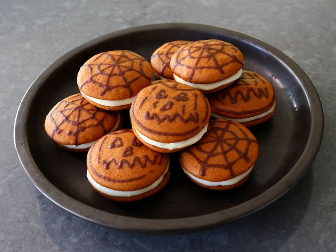

Halloween Pumpkin Whoopie Pies

I've not personally seen these always called whoopie pies, but then again I don't remember what they were called otherwise...
Anyways, these are a great treat that uses pumpkin puree to capture the essence of the season.
Ingredients:
For this recipe, you will need:
Pies
- 1 ½ cups all-purpose flour
- ½ teaspoon kosher salt
- ½ teaspoon baking powder
- ¼ teaspoon baking soda;
- 1 ½ teaspoons ground cinnamon
- teaspoon ground ginger
- ½ teaspoon ground cloves
- ¾ cup pure pumpkin puree
- 1 cup packed brown sugar
- 1 large egg
- ½ cup vegetable oil
- 3 drops gel-style orange food coloring (optional)
- ¼ teaspoon gel-style brown food coloring (optional)
Frosting
- 4 ounces cream cheese, at room temperature
- 2 tablespoons soft unsalted butter
- ½ teaspoon vanilla extract
- 1 ½ cups confectioner's sugar
Directions:
- Preheat the oven to 350 degrees F (180 degrees C). Line 2 baking sheets with parchment.
- Whisk flour, salt, baking powder, baking soda, cinnamon, ginger, and cloves together in a bowl until thoroughly combined.
- In another bowl, whisk pumpkin, brown sugar, egg, and vegetable oil thoroughly together.
- Add orange food coloring to the wet ingredients, along with flour mixture, and stir with a whisk until evenly combined. Whisk in more orange food coloring for a deeper color.
- Transfer 10, evenly spaced, 1 1/2 tablespoon-sized portions onto 1 of the prepared baking sheet. Use a damp finger to flatten the batter slightly, while also making the portions as round as possible.
- Bake in the preheated oven until cookies just start to turn golden brown ever so slightly around the edges, about 18 minutes. Remove cookies; do not turn the oven off. Cool cookies on the pan for about 15 minutes, then transfer to a wire rack to cool completely.
- Portion 10 more cookies on the second sheet pan as above in Step 4. Add brown food coloring to the remaining batter; transfer into a piping bag fitted with a fine round tip (alternately, add brown batter into a resealable plastic sandwich bag, and snip a very small piece of the corner snipped off after batter is transferred in).
- Use the darker batter to pipe whatever Halloween designs you want on top of the portioned batter.
- Bake cookies in the preheated oven until cookies just start to turn golden brown ever so slightly around the edges, about 18 minutes. Cool cookies on the pan for about 15 minutes, then transfer to a wire rack to cool completely.
- While cookies are cooling, make the frosting. Combine cream cheese, butter, milk, vanilla, and confectioner’s sugar in a mixing bowl, and beat with an electric hand mixer on High speed to whip the mixture until smooth, light, and fluffy. Refrigerate frosting to firm up a bit before trying to pipe.
- Spread frosting evenly onto the 10 bottom, undecorated cookies, and top with the 10 decorated cookies. Refrigerate cookies until thoroughly chilled before serving.
If you would like to return to the main Odin Recipes page, click here.